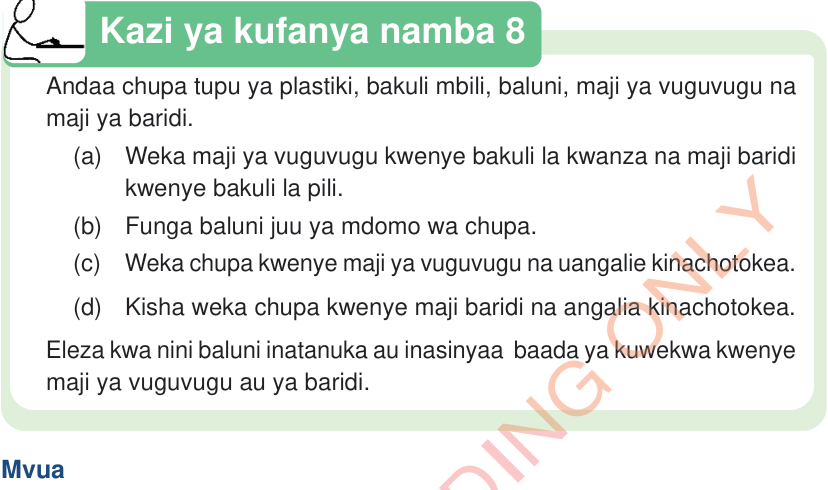

Kazi ya kufanya namba 8
Andaa chupa tupu ya plastiki, bakuli mbili, baluni, maji ya vuguvugu na maji ya baridi.
(a)
Weka maji ya vuguvugu kwenye bakuli la kwanza na maji baridi kwenye bakuli la pili.
(b)
Funga baluni juu ya mdomo wa chupa.
(c)
Weka chupa kwenye maji ya vuguvugu na uangalie kinachotokea.
(d)
Kisha weka chupa kwenye maji baridi na angalia kinachotokea.
Eleza kwa nini baluni inatanuka au inasinyaa baada ya kuwekwa kwenye maji ya vuguvugu au ya baridi.